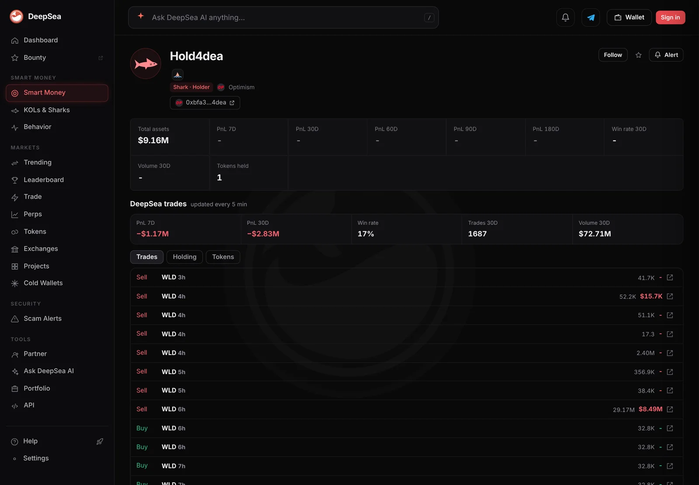

A shark sold 29.17 million WLD for $8.49 million in one trade as bitcoin fell below $70,000
An Optimism wallet that DeepSea tags as a shark dumped about 0.78% of all circulating WLD overnight. Its closed trades are down $2.83 million in 30 days.
Key points
- DeepSea's wallet page for Hold4dea, an Optimism shark, shows one sale of 29.17 million WLD worth $8.49 million about six hours before 6:46 a.m. ET on November 13, 2026.
- In DeepSea's 24-hour flow table built 6:35 a.m. ET, the wallet sold $9.91 million and bought $201,101 on Optimism. All sharks together sold $11.26 million of WLD there and bought $1.06 million.
- The wallet's closed trades lost $1.17 million in 7 days, with none of its 27 trades in profit, and $2.83 million in 30 days.
 What DeepSea's data shows
What DeepSea's data shows
DeepSea's wallet page for Hold4dea (Optimism, address ending in 4dea) lists it as a Shark and a Holder, meaning a very large token holder. At 6:46 a.m. ET on November 13 its trade list showed a sale of 29.17 million WLD, Worldcoin's token, priced at $8.49 million, about six hours earlier. Smaller WLD sales followed over the next three hours: 356,900, then 2.40 million, plus several of 38,000 to 52,000 WLD. The page shows total assets of $9.16 million in a single token.
DeepSea's 24-hour flow table, built at 6:35 a.m. ET, puts the wallet's Optimism total at $9,910,620 sold and $201,101 bought over 37 trades, the largest seller of any shark wallet in the table. For WLD on Optimism, 12 shark wallets sold $11,263,014 and bought $1,061,044 over 229 trades.
DeepSea's realized profit table (closed trades only, first in, first out) shows the wallet down $1,169,133 over 7 days, with 0 of 27 trades in profit, and down $2,827,590 over 30 days, 27 of 157 in profit. The wallet page shows 1,687 trades and $72.71 million of volume in 30 days, a 17% win rate.

Data: DeepSea (desea.io), checked November 13, 2026, 6:46 a.m. ET.
How big was the sale?
New to the tools? Read what DeepSea is.
CoinGecko listed 3.75 billion WLD in circulation at 6:48 a.m. ET, so the single sale moved about 0.78% of the circulating supply. Its $8.49 million value equals about 5.9% of WLD's $143.8 million of trading over 24 hours on all markets CoinGecko tracks. The implied price, about $0.291, is close to the day's low of $0.2856.
WLD itself held up on the day: $0.301, down 0.3% in 24 hours but down 12.9% in 7 days.
Hold4dea's three biggest WLD sales
million WLD
Source: DeepSea wallet page, read November 13, 2026, 6:46 a.m. ET.
The market around it
Bitcoin first slipped under $70,000 at about 10:10 p.m. ET on November 12 and touched about $68,062 near 1 a.m. ET, by CoinGecko's five-minute prices. At 6:48 a.m. ET it was $69,314, down 4.9% in 24 hours. Ether was $1,958, down 3.2%.

Why it matters
This analysis uses data from DeepSea and CoinGecko. We could not open an Optimism block explorer for this run, so the trade times and sizes rest on DeepSea's records. One wallet made up most of the day's shark selling in WLD: $9.91 million of $11.26 million. Who controls it, and why it sold, is unknown.
LC Insight analysis
This section is our reading of the facts above, not a statement of fact.
- We think the key fact is concentration: one wallet, not a crowd, accounts for nearly nine in ten dollars of shark WLD selling on Optimism.
- A sale this size into a falling market came close to the day's low price. The wallet's record suggests it has been closing positions at a loss for weeks, not just today.
- With $9.16 million left in a single token, the wallet's next big move will be easy to spot in DeepSea's 24-hour flow table.
What's next
- Whether Hold4dea sells its remaining $9.16 million holding
- WLD's price against the $0.2856 day low
- Whether other Optimism sharks start buying WLD again
Disclaimer. This article is based on public information and the sources listed below as of the update time shown. It is for information only and is not investment, legal or tax advice. Figures may change as companies and authorities publish new data.
Sources
- DeepSea, wallet page for Hold4dea, Optimism (read November 13, 2026, 6:46 a.m. ET)
- DeepSea, 24-hour flows by token and wallet (built November 13, 2026, 6:35 a.m. ET)
- DeepSea, realized profit by wallet, 7 and 30 days (built November 13, 2026, 6:35 a.m. ET)
- CoinGecko, Worldcoin (WLD) price, supply and volume (read November 13, 2026, 6:48 a.m. ET)
- CoinGecko, Bitcoin (BTC) price, 24-hour chart (read November 13, 2026, 6:48 a.m. ET)